Background
Ten Spot started as Fitspot, a wellness company specializing in onsite fitness experiences. In 2020, it had to adapt as everything suddenly moved online.
Ten Spot wanted to offer more than fitness classes, adding workshops, experiences, and wellness content delivered through its portals. I was brought on to design the next iteration of the company: a communication platform that would foster active conversations and team building across the employee base.
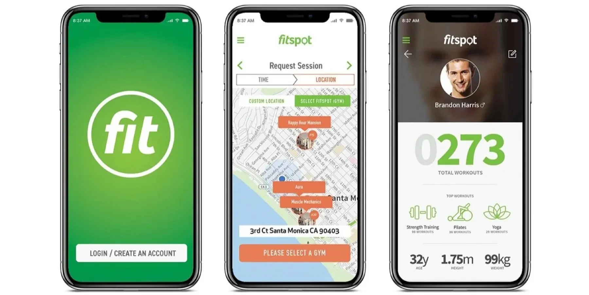
Problem
How might we help employees maintain their well-being and stay connected as a hybrid workforce?
Ten Spot aims to help companies boost productivity and retention and build a strong culture. The goal was a solution that addressed employees’ specific needs and improved their overall well-being at work.
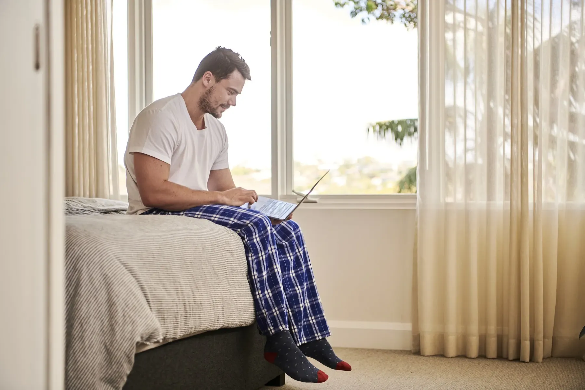
Research
Competitive analysis
I studied the features of companies in the workforce management space. One gap stood out: a lack of onboarding experiences. That became one of the main features of the Ten Spot product.
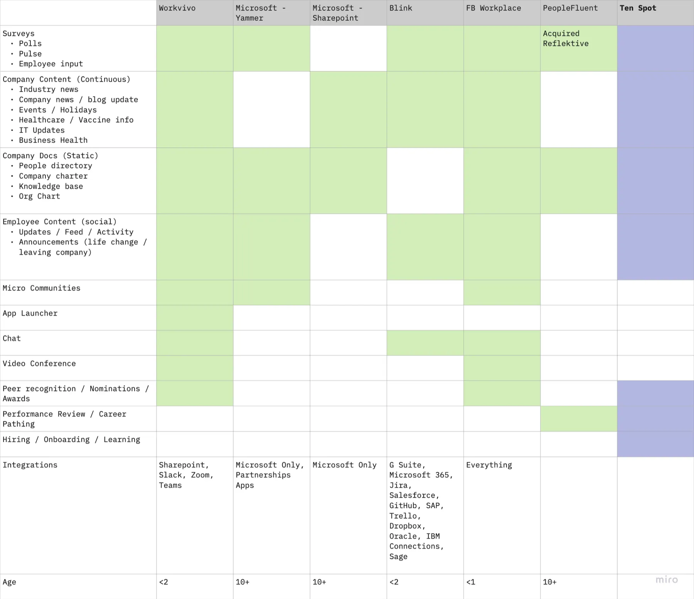
Persona development
I ran interviews focused first on HR decision makers, since they would be our first line of communication and the ones deciding whether to buy. Afterwards, I ran a persona workshop so Ten Spot would know this customer better.
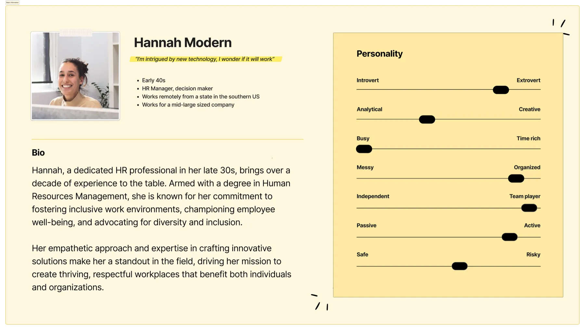
Jobs to be done
The interviews also surfaced the jobs an HR representative cares most about for their employees:
- Onboarding. Provide a seamless experience for new remote employees, with chances to give feedback on how things are going.
- Engaging with fitness. Help employees discover and join Ten Spot fitness classes to improve their physical well-being.
- Connecting with colleagues. Help employees bond through chat, leaderboards, goal setting, and shout-outs.
- Managing the wellness program. Let corporate clients manage their whole wellness program in one place and track engagement across experiences.
Confident we could serve all of these jobs, we split design and development into two MVP phases: Slack onboarding and Team HQ.
Phase 1: Slack onboarding
Most of our target companies were small to mid-sized, and business intelligence told us Slack was an important piece of the puzzle. So we started there, with a solution for new employees. I crafted the experience from Day 1, Hour 1.
Day 1, hour 1
Ten Spot Bot welcomes the new employee, explains where to get help with equipment, and introduces itself as their onboarding guide.
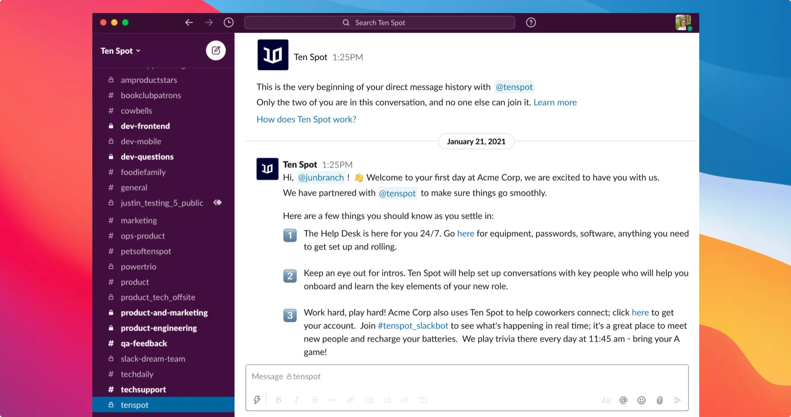
Day 1, end of day
The bot asks a few questions to get to know the new employee, so it can share that information with colleagues based on time zone and preferences.
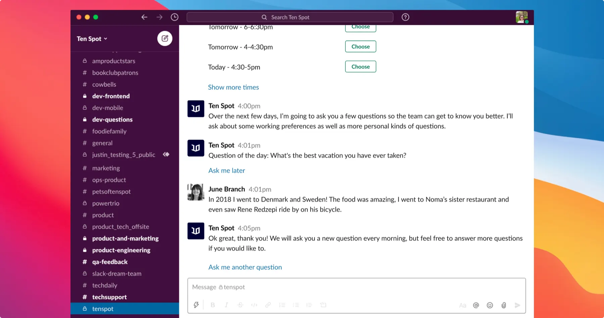
Day 2, hour 1
The bot learns about the employee’s working habits, to use later when auto-scheduling meetings.
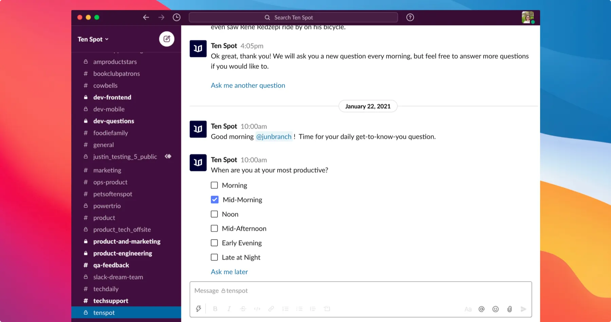
Day 2, end of day
The bot lets the employee know about an upcoming meditation class.
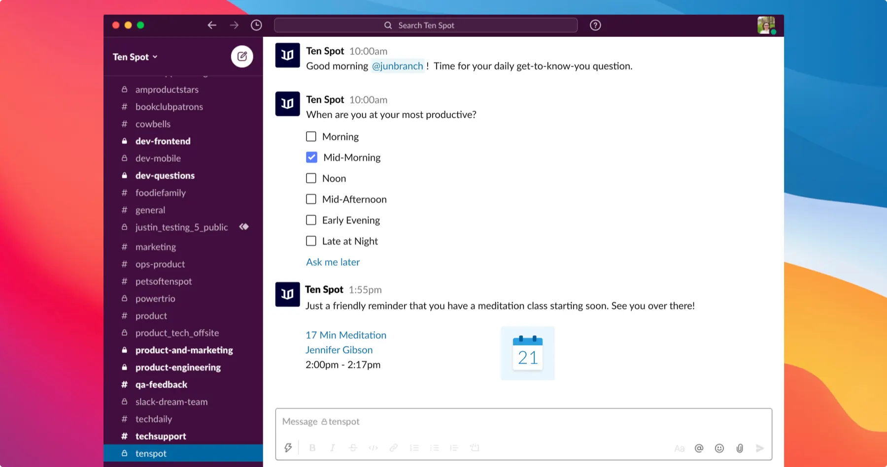
End of week 1
The bot checks in on how the employee is doing. If they say they aren’t doing well, it offers resources to help.
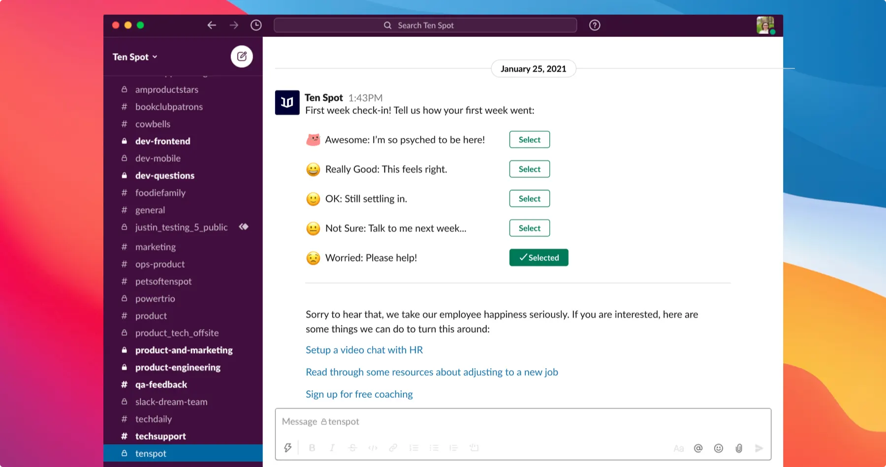
Phase 2: Team HQ
We also needed a solution for companies that don’t use Slack, or whose departments use different systems altogether: a centralized experience for every employee that could essentially be their homepage. I designed the interface from the ground up and built a component library for it.
Team HQ home
Employees see their calendar, upcoming events, and a stream of what’s happening at their company.
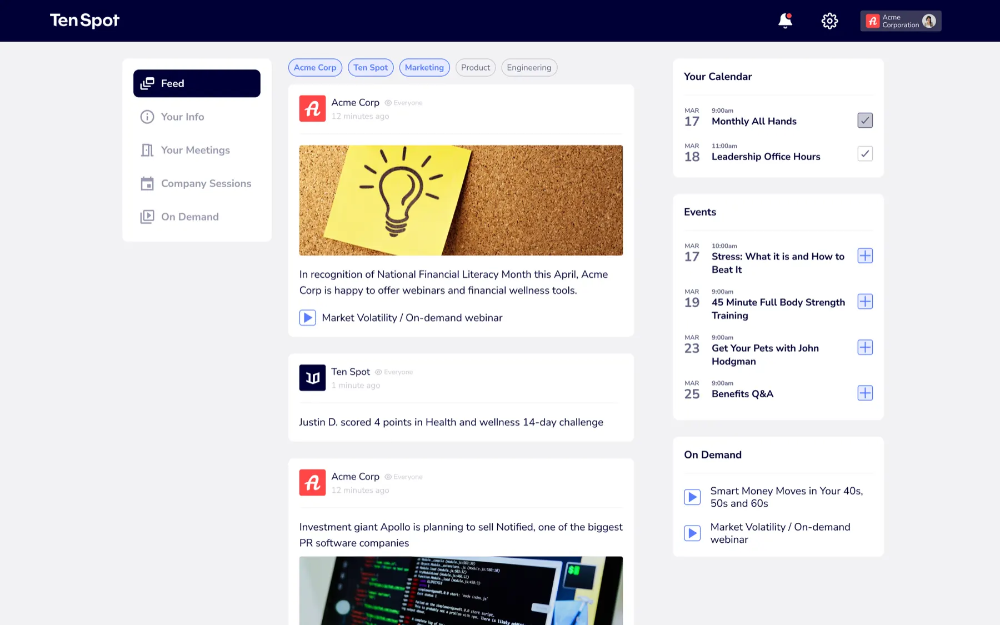
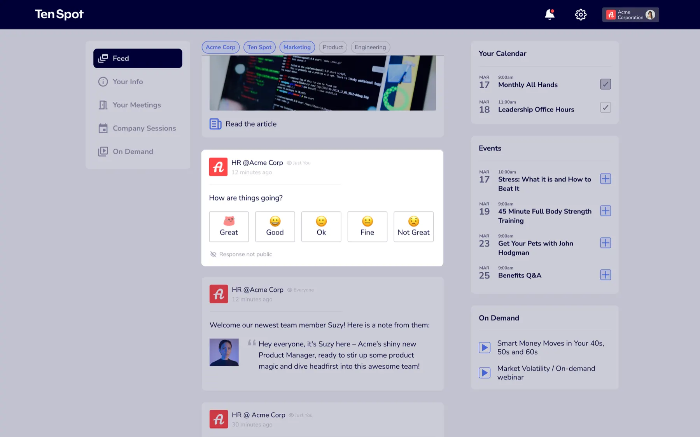
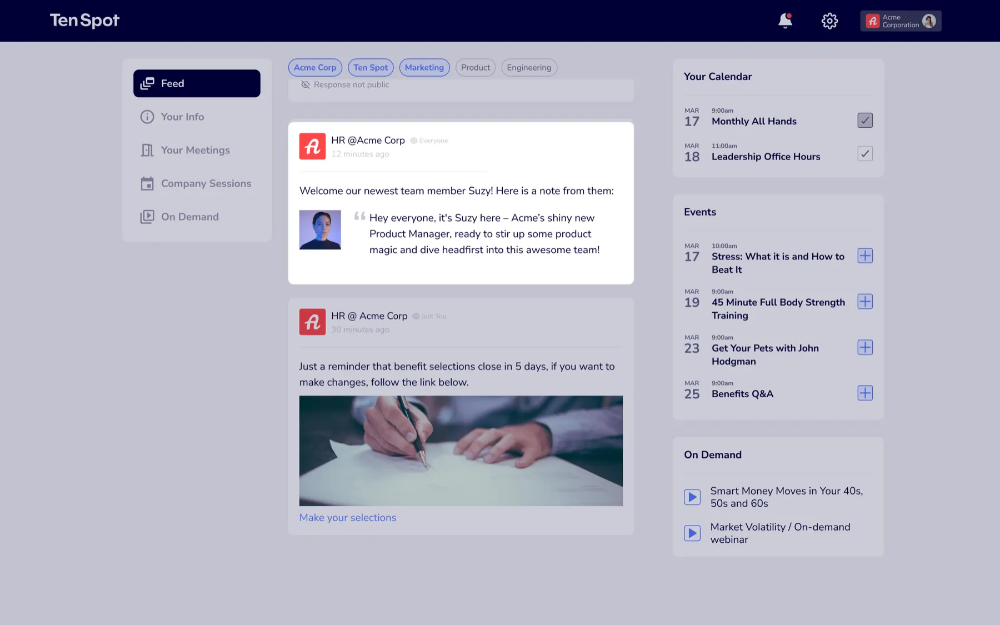
Company sessions
A mix of company-sponsored events and important meetings.
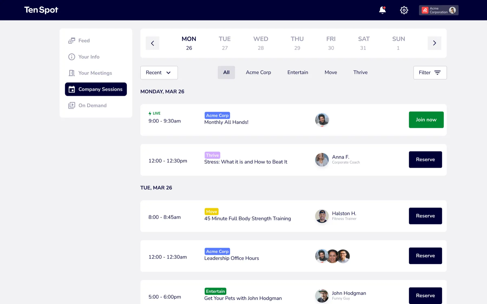
On demand
A library combining company news, entertainment, and videos that promote wellness.
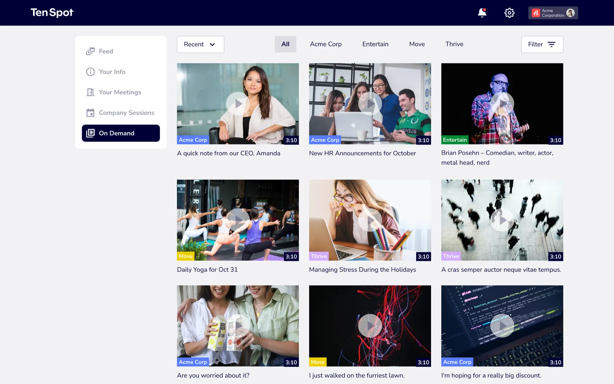
Results
Six months in, the product had been adopted by: